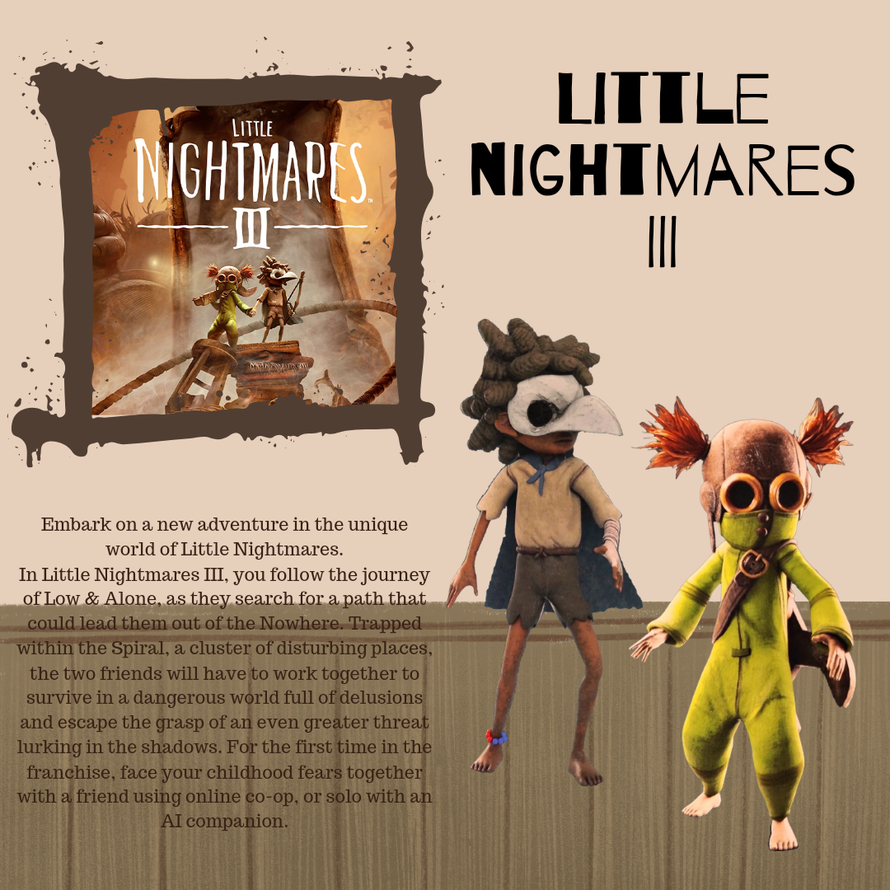

About the PC
Personal computers are versatile computing devices that have had a profound impact on virtually every aspect of modern life, from work to entertainment and communication. Here are some key aspects of PCs. PCs come in various form factors, including desktops, laptops, all-in-one computers, and even small form factor PCs like mini-PCs and gaming consoles. This diversity allows individuals to choose a computer that suits their specific needs. PCs run a wide range of operating systems, with Microsoft Windows, macOS (for Apple computers), and Linux being the most common. Each operating system has its own interface, features, and software ecosystem. Unlike many other computing devices, PCs are highly customizable. Users can upgrade components such as the CPU, GPU, RAM, and storage to tailor their PC's performance to their needs. This is particularly important for gamers and professionals who require high-end hardware. PCs are versatile and serve multiple purposes. They are used for work, gaming, entertainment, communication, and much more. PC gaming is a major segment of the gaming industry, with a vast library of games, including both PC exclusives and multi-platform titles. High-performance gaming PCs offer cutting-edge graphics and processing power.

Fight your way through a modern-day Seattle on the brink of an open war as an elder Vampire. Meet the power-players, ally yourself and decide who will rule and what the city will become. A three-front siege on Seattle, a power vacuum in the vampire court and an awakened elder at odds with the voice in her head, realized by BAFTA award winning studio, The Chinese Room.
Blood sustains you and powers your vampiric Disciplines. You’ll stalk and feed on the city’s population by night. Use your supernatural powers or raw persuasion on civilians and lure them into deep, dark alleys to sate your Hunger. Beware of breaking the Masquerade though: do not reveal what you are or you risk reprisals - at first from law enforcement and then, well, remember you are not all that goes bump in this night. Explore visceral, immersive combat rewarding entirely different playstyles and approaches based on your choice of vampire clan. Will you wade into the fray with supernatural fists, harangue from afar or rebalance your odds by thinning the herd like the apex predator you are? Clan choice supports these playstyles and more.
Play as Bigby, “The Big Bad Wolf” and Sheriff of Fabletown, as you return to a gritty detective noir world where there are no fairy tale endings. The Wolf Among Us 2 picks up six months after the events of season one. It’s winter in New York City and a new case threatens to cross the line between Fabletown and the NYPD. How you choose to approach it could determine the future of the Fable community. Telltale’s The Wolf Among Us series is based upon the DC Comics series, Fables.

Embark on a new adventure in the unique world of Little Nightmares. In Little Nightmares III, you follow the journey of Low & Alone, as they search for a path that could lead them out of the Nowhere. Trapped within the Spiral, a cluster of disturbing places, the two friends will have to work together to survive in a dangerous world full of delusions and escape the grasp of an even greater threat lurking in the shadows. For the first time in the franchise, face your childhood fears together with a friend using online co-op, or solo with an AI companion.